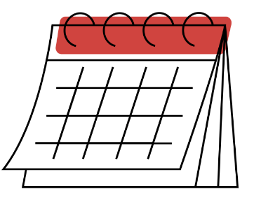

PROGRAMAÇÃO COMPLETA
Dia 1: 5 de Novembro de 2024
| Horário | Atividade | Coordenador | Descrição |
|---|---|---|---|
| 9:00 - 10:30 | Palestra de Abertura | Dr. João Silva | Palestra de abertura que abordará os desafios e oportunidades da integração da tecnologia na agricultura moderna, destacando os avanços recentes e as tendências futuras. |
| 11:00 - 12:30 | Sessões Paralelas: Agricultura de Precisão vs. Agricultura Convencional | Dra. Maria Oliveira | Esta sessão oferecerá uma comparação entre os métodos de agricultura de precisão e agricultura convencional, explorando os benefícios e desafios de cada abordagem. |
| 12:30 - 14:00 | Almoço | Organização(CITA) | Intervalo para os participantes desfrutarem do almoço e interagirem entre si. |
| 14:00 - 15:30 | Painel de Discussão: Uso de Drones na Agricultura | Eng. Pedro Santos | Um painel de especialistas discutirá as aplicações e benefícios do uso de drones na agricultura, compartilhando casos de sucesso e desafios enfrentados na implementação dessa tecnologia. |
| 15:30 - 17:00 | Workshop Interativo: Big Data e Análise de Dados no Agronegócio | Dra. Ana Ferreira | Este workshop prático fornecerá uma introdução ao uso de big data e análise de dados no agronegócio, demonstrando como essas ferramentas podem ser usadas para melhorar a tomada de decisões e otimizar os processos agrícolas. |
| 17:00 - 18:30 | Coquetel de Networking | Organização(CITA) | Um momento informal para os participantes se reunirem, trocarem ideias e fazerem networking após o primeiro dia de atividades. |
Dia 2: 6 de Novembro de 2024
| Horário | Atividade | Coordenador | Descrição |
|---|---|---|---|
| 9:00 - 10:30 | Apresentações de Pesquisa | Dr. Marcos Santos | Sessão dedicada à apresentação de pesquisas recentes e resultados inovadores no campo da tecnologia agroinformática. |
| 11:00 - 12:30 | Sessões Paralelas: IoT na Agricultura | Dra. Fernanda Oliveira | Exploração das aplicações e desafios da Internet das Coisas na agricultura, com foco em soluções práticas e casos de uso. |
| 12:30 - 14:00 | Almoço | Organização(CITA) | Intervalo para os participantes desfrutarem do almoço e interagirem entre si. |
| 14:00 - 15:30 | Workshop Interativo: Blockchain e Rastreabilidade de Alimentos | Dr. Ricardo Fernandes | Este workshop fornecerá uma introdução à tecnologia blockchain e seu papel na garantia da rastreabilidade e segurança dos alimentos, com exemplos práticos de implementação. |
| 15:30 - 17:00 | Painel de Discussão: Agricultura Vertical e Indoor | Dra. Sofia Carvalho | Debate sobre os desafios e oportunidades da agricultura vertical e indoor, incluindo tecnologias, práticas sustentáveis e potenciais impactos no setor agrícola. |
| 17:00 - 18:30 | Coquetel de Networking | Organização(CITA) | Um momento informal para os participantes se reunirem, trocarem ideias e fazerem networking após o primeiro dia de atividades. |
Dia 3: 7 de Novembro de 2024
| Horário | Atividade | Coordenador | Descrição |
|---|---|---|---|
| 9:00 - 10:30 | Apresentação de Casos de Sucesso em Agricultura Digital | Eng. Luís Mendes | Exposição de casos reais de sucesso na implementação de tecnologias digitais no setor agrícola, com lições aprendidas e melhores práticas compartilhadas. |
| 11:00 - 12:30 | Sessões Paralelas: Aplicações de Machine Learning na Produção Agrícola | Dr. André Almeida | Exploração das oportunidades e desafios do uso de técnicas de machine learning para otimizar a produção agrícola e a gestão de cultivos. |
| 12:30 - 14:00 | Almoço | Organização(CITA) | Intervalo para os participantes desfrutarem do almoço e interagirem entre si. |
| 14:00 - 15:30 | Visita Técnica a Fazendas Modelo | Eng. Carla Miranda | Uma oportunidade de visitar fazendas modelo que estão na vanguarda da implementação de tecnologias agrícolas inovadoras, permitindo uma experiência prática e aprendizado direto com os produtores. |
| 15:30 - 17:00 | Mesa-redonda: Desafios da Adoção Tecnológica no Agronegócio | Dra. Mariana Castro | Debate sobre os desafios enfrentados pelas empresas agrícolas na adoção e integração de tecnologias inovadoras, e estratégias para superar esses obstáculos. |
| 17:00 - 18:30 | Coquetel de Networking | Organização(CITA) | Um momento informal para os participantes se reunirem, trocarem ideias e fazerem networking após o primeiro dia de atividades. |
Dia 4: 8 de Novembro de 2024
| Horário | Atividade | Coordenador | Descrição |
|---|---|---|---|
| 9:00 - 10:30 | Apresentações de Trabalhos de Pesquisa | Dra. Ana Sousa | Apresentações de trabalhos acadêmicos e científicos selecionados, destacando pesquisas inovadoras e resultados relevantes para o campo da tecnologia agroinformática. |
| 11:00 - 12:30 | Sessões Paralelas: Inovações em Máquinas e Equipamentos Agrícolas | Eng. Tiago Nunes | Exploração das últimas inovações em máquinas e equipamentos agrícolas, incluindo tecnologias emergentes e tendências de mercado. |
| 12:30 - 14:00 | Almoço | Organização(CITA) | Intervalo para os participantes desfrutarem do almoço e interagirem entre si. |
| 14:00 - 15:30 | Workshop Interativo: Implementação Prática de Soluções Tecnológicas | Dr. Carlos Silva | Este workshop oferecerá aos participantes a oportunidade de aprender e experimentar a implementação prática de diversas soluções tecnológicas no contexto agrícola. |
| 15:30 - 17:00 | Encerramento e Cerimônia de Premiação | Dr. Rogério Soares,Presidente do Comitê Organizador | O evento será encerrado com uma cerimônia que reconhecerá os destaques do evento, incluindo premiações para melhores trabalhos de pesquisa e contribuições excepcionais para o campo da tecnologia agroinformática. |
| 17:00 - 18:30 | Coquetel de encerramento | Dr. Otávio Côrtes,Vice-presidente do Comitê Organizador | Um coquetel de encerramento para celebrar o sucesso do evento e permitir que os participantes continuem suas conversas e conexões iniciadas ao longo dos quatro dias de atividades. |